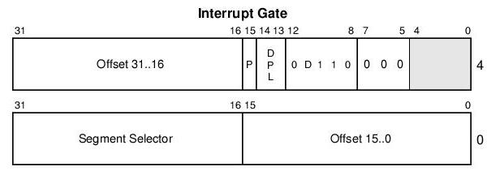
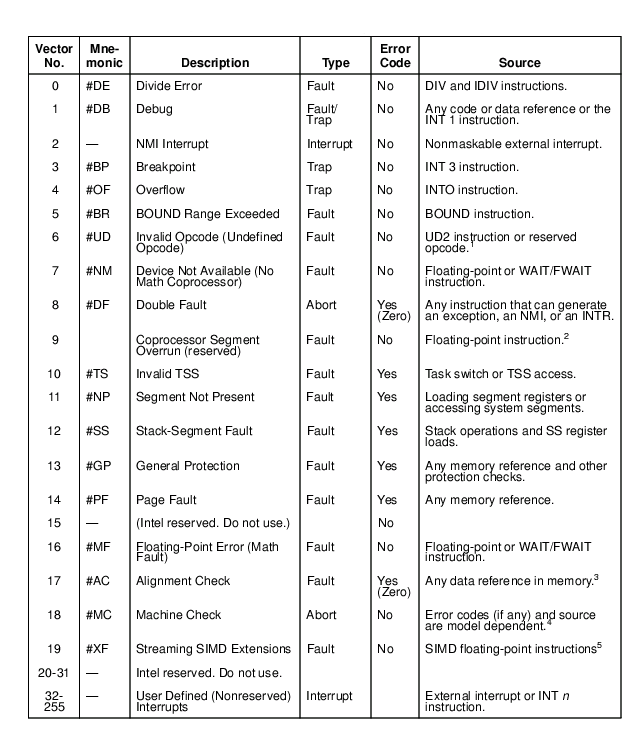
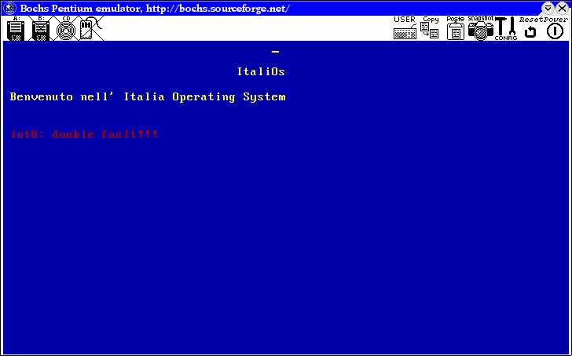

Dopo aver implementato i segmenti dobbiamo capire come funziona in pmode la gestione degli interrupt e implementarla.
Quando entriamo in pmode tutti gli interrupt del bios che possiamo usare e che abbiamo usato tranquillamente in real mode non sono + disponibili. Il processore cerca gli handler degli interrupt in un vettore di descrittori del tutto simile alla gdt. Questo vettore può essere grande 256 elementi (o meno) e il suo indirizzo va memorizzato nell'idtr che è un registro identico (nella sua composizione) all'gdtr.
Il descrittore degli interrupt è fatto così:

- segmento selector: qui dobbiamo inserire l'offeset dall'inizio della gdt del segmento che contiene l'handler del nostro interrupt (nel nostro caso 0x8)
- offset: è l'eip del nostro handler
- D: dimensione, se ad 1 indica che il nostro segmento è a 32 bit altrimenti è a 16 bit
- P: presente, se ad 1 indica che il nostro interrupt è presente e viceversa
- DPL: indica il livello di privilegio
Detto ciò possiamo implementare facilmente tutta la gestione degli interrupt. Questa sarà leggermente + complessa dell'implementazione della gdt perkè gli interrupt sono cose che si modificano facilmente e quindi ci serve una maggiore flessibilità.
Questa è l'interfaccia per accedere e modificare gli elementi della idt:
namespace idt{
//inizializza la idt
void init();
//installa l'handler func per l'interrupt index
bool add(void (*func)(), size_t index);
//cancella l'handler di un interrupt e restituisce il puntatore al precedente handler
void* del(size_t index);
//restituisce l'indirizzo di un handler
void* get(size_t index);
};
Ecco le implementazioni della add e della init:
namespace {
//come è strutturato un int_gate
struct int_gate{
word offset_low;
word segment;
word reserved : 5;
word option : 11;
word offset_high;
};
//handler di default: non fa nulla
void mint_null(){ asm("iret"); }
//numero di interrupt che usiamo (il massimo!!!)
static const size_t _num_elem = 256;
//il nostro bellissimo vettore di interrupt ^__^
int_gate _IDT[_num_elem];
//funzione per impostare l'idtr
void set_idtr(int_gate* base,size_t num_desc) {
dword idt_reg[2];
idt_reg[0]=(num_desc*8) << 16;
idt_reg[1]=(dword)base;
__asm__ __volatile__ ("lidt (%0)": :"g" ((char *)idt_reg+2));
}
}
bool idt::add(void (*func)(), size_t index){
if(index < _num_elem){ //controlliamo se è un interrupt valido
debug << "Imposto l'handler " << index << endl;
dword addr = (dword)func;
_IDT[index].offset_low = (addr & 0xFFFF); //prendiamo i 16 bit + bassi
_IDT[index].offset_high = (addr >> 16); //prendiamo i 16 bit + alti
_IDT[index].segment = 0x8; //questo è il segmento codice
_IDT[index].option = 0x470; //100 0111 0000 (PRESENTE DPL=0)
return true;
}
debug << "Impossibile imposta l'handler " << index << " si trova fuori dal range. Massimo 256" << endl;
return false;
}
void idt::init(){
debug << "Inizializazione degli interrupt in corso....." << endl;
//impostiamo tutti gli interrupt con l'handler di default
for(size_t i = 0; i < _num_elem; i++)
add(mint_null, i);
//settiamo l'idtr
set_idtr(_IDT, _num_elem);
//attiviamo gli interrupt
asm("sti");
}
Il codice è supercommentato quindi dovrebbe essere abbastanza facile da capire.
Esistono degli interrupt speciali. Questi sono le eccezioni e gli irq. Dovremo gestire entrambe le categoria in modo particolare.
Ecco una tabella delle eccezioni:

Saggiamente ci occupiamo di gestire queste eccezioni. Creiamo un handler per ciascusa eccezione che è fatto così:
void intnum(){
kout << "\nIntnum: descizione";
while(1);
}
Nelle prossime lezioni ci occuperemo di gestire accuratamente alcune eccezioni.
Proviamo ora ad eseguire questo codice e ci viene restituita a video una cosa del genere:

Questo succede perché bisogna gestire gli irq.